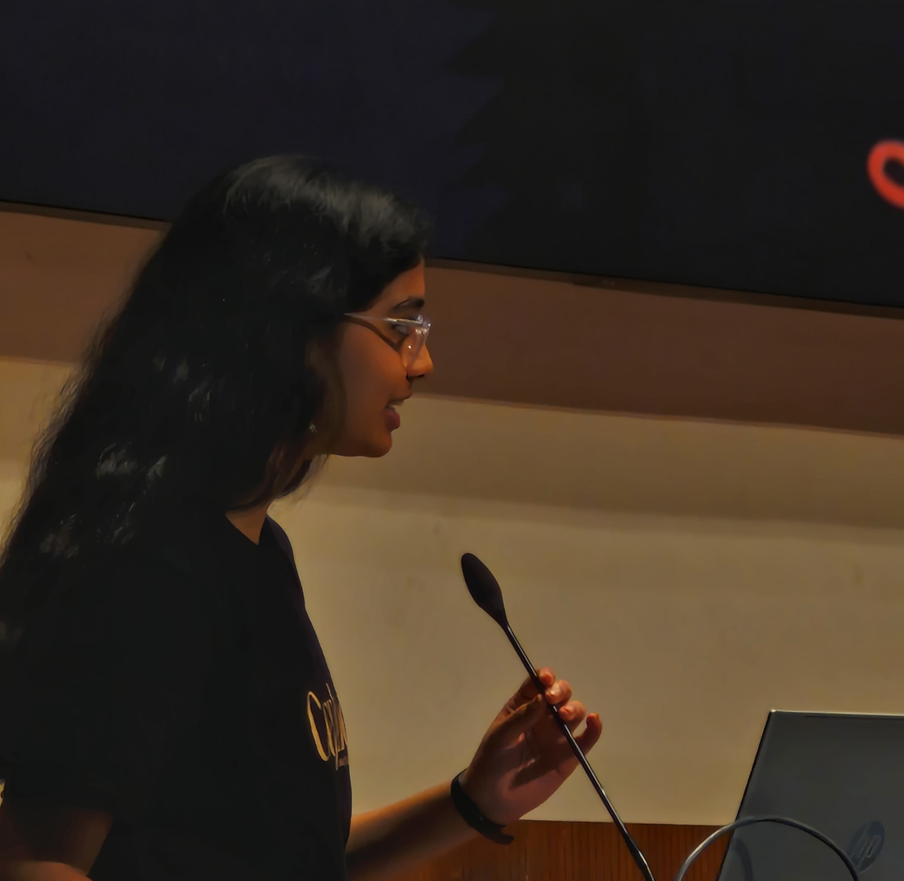

Engineering Physics Undergraduate • IIT Hyderabad
Exploring cosmology, gravitational-wave astronomy, neutrino astrophysics, and galaxy formation through observational data analysis and computational modelling.

The Universe is like an ocean, and we're only at the shore. Hi! I am an undergraduate student in Engineering Physics at the Indian Institute of Technology Hyderabad. I am interested in research in cosmology, gravitational-wave astronomy, neutrino astrophysics, galaxy formation, and large-scale structure. My current work spans IceCube neutrino analyses, dark matter halo modelling, and gravitational-wave population studies using LISA and ground-based detectors.
Searching for neutrino emission from astrophysical sources using IceCube observations and unbinned likelihood analyses.
Parameter estimation and population inference for compact binaries using LISA and ground-based detectors.
View Publications →Studying halo properties, stellar–halo mass relations, and large-scale structure using cosmological simulations.
View Publications →Investigating the Baryonic Faber-Jackson Relation using IllustrisTNG cosmological simulations to analyse MOND versus LambdaCDM.
View Publications →Selected research papers and publications in astrophysics and neutrino astronomy.
Research using IceCube observations and likelihood-based methods to investigate astrophysical neutrino emission.
Read Paper →Investigation of high-energy neutrino emission from the galaxy cluster Abell 119 using IceCube data.
Read Paper →Feel free to get in touch regarding research and collaboration.